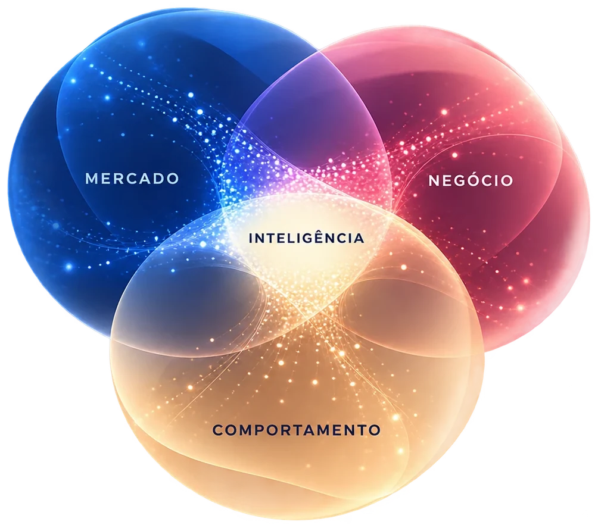

Quem decide,
quem executa,
quem distribui
PMEs de varejo, e-commerce, tech, educação e entretenimento não têm recursos para contratar as grandes agências. Dados sobram, e clareza falta. Todo clique é uma pessoa real do outro lado da tela. Do outro lado da mesa, estão três perfis.
Dono ou C-level de PME
Decide o orçamento. Sente a operação fragmentada na pele e quer resultado no P&L, não mais um relatório de mídia.
Gestor de mídia ou growth
Executa no dia a dia. Precisa de diagnóstico rápido e alavancas priorizadas, não de mais um dashboard para olhar.
Agência independente
Busca uma camada de inteligência para competir com as grandes sem inchar o time nem perder a relação com o cliente.
O marketing aprendeu a medir o consumidor melhor do que aprendeu a entendê-lo.
Nunca tivemos tantos dados sobre o consumidor, e ainda assim um relatório mostra que a conversão caiu sem contar se foi porque o concorrente mudou o preço. Quando o dashboard melhora e o negócio não, investir mais em mídia nem sempre é a decisão certa. A Meridiem recoloca comportamento dentro da conta: ajuda a entender por que os números se movem e o que fazer a partir disso.
O relatório pergunta
- Qual campanha performou melhor
- Qual canal deu mais retorno
- Qual produto vendeu mais
- Quanto caiu a conversão
- Quanto subiu o custo por clique
A Meridiem acrescenta
- O que motivou o comportamento
- Que barreira bloqueou a resposta
- Que informação chegou tarde demais
- Que mudança de mercado desviou a demanda
- Se isso se repete ou depende de uma condição específica
Mercado, negócio e comportamento
Mercado informa o contexto, negócio informa a realidade e comportamento informa a resposta das pessoas. A inteligência nasce do cruzamento, nunca de uma camada isolada.

Mercado
Como o setor funciona de verdade
Players, mudanças recentes, sazonalidade direta e indireta, indústrias marginais e onde a categoria dói hoje.
Negócio
História, canais e restrições reais
O que funcionou, o que falhou, o que nunca foi testado, o que foi testado em condições ruins e a capacidade instalada para executar.
Comportamento
Inclui quem não comprou
Quem comparou e desistiu, abandonou o carrinho ou pesquisou e sumiu. A análise começa antes da compra e segue depois dela. A jornada não é uma linha reta: a pessoa descobre em um ambiente, valida em outro e volta atrás.
Nenhuma recomendação nasce direto de um sinal
São oito etapas, da informação à ação, e cada uma depende da anterior. O ciclo volta ao começo quando um novo sinal muda a leitura. Método cria consistência, e experiência cria discernimento. A IA amplia a capacidade de processamento, e pessoas definem direção, critérios e decisão.
Ler
Informação, leitura e diagnóstico: o que está acontecendo e quais as causas. Metas, dores e diagnósticos iniciais são hipóteses a validar.
Definir
Oportunidades, Índice de Viabilidade e priorização: o que faz sentido fazer primeiro.
Agir
Decisão e execução por você, por fornecedores atuais ou por parceiros. A medição devolve o ciclo ao começo.
Regra 1A disciplina segue o problema.
Regra 2Recomendação sem viabilidade não vale nada.
Regra 3A rota muda quando o sinal muda.
Oportunidade não é prioridade
O Índice de Viabilidade ordena o que fazer primeiro e o que construir para os próximos ciclos. O Índice de Esforço mede a dificuldade de vender cada produto.
“Capacidade demonstrada pesa mais do que capacidade declarada.”
Índice de Viabilidade
- Mede a maturidade instalada: orçamento, equipe, tecnologia, dados, prazo, parceiros, liderança e mensuração
- Cruza esse levantamento com cada solução: esforço de execução × viabilidade
- Começa por ganhos rápidos com o que já existe
- Termina nos projetos estruturantes, com caminho construído
Índice de Esforço
- Cruza demanda de mercado com histórico de venda
- Separa o que vende por demanda orgânica do que só anda com mídia
- Entra como camada extra sobre a curva ABC
- Mostra o potencial de cada item se vender sozinho
Onde está a sua empresa na prateleira digital?
O conceito saiu do varejo e do retail media: prateleira digital é a posição que a sua empresa ocupa no ambiente digital para vender, dentro ou fora do varejo. É a entrega máxima da Meridiem, e duas lentes decidem essa posição.
Digital Discoverability
Onde você precisa estar, e o quanto está preparado para ser descoberto ali.
Digital Activation
Como agir nesses lugares gerando o resultado desejado.
Onde ela existe
Busca, social, marketplace, IA
Onde alguém descobre, pesquisa, compara, recebe recomendação, avalia reputação, converte ou volta.
Discoverability
Define se você está nela
Presença, cobertura, encontrabilidade, posicionamento e estrutura decidem se você aparece, e em que posição.
Activation
Define como você compete
Uma vez na prateleira, é o que transforma presença em atenção, desejo, conversão e crescimento.
Nenhum canal pertence a uma lente só. O mesmo Google resolve problemas diferentes conforme a intenção da ação.
O que o método vira na prática
Entregas concretas para ler o mercado, ler a demanda e decidir o que fazer primeiro.
Leitura de mercado
- Brief de Inteligência, janela de 30 dias
- Mapa de Tendências
- Indústrias Marginais
- Cases e Insights
- Onde Dói
Leitura de demanda
- Demanda de Produto
- Sazonalidade Direta e Indireta
- Mapa de Buscas
- Jornada de Descoberta, passiva e ativa
- Índice de Esforço
Decisão
- Digital Discoverability e Activation
- Prateleira Digital
- Plano de Ação Priorizado
Os produtos materializam o método e não definem a empresa. O portfólio segue em construção.
Projeto ou Parceria Contínua
Nos dois formatos, você recebe um mapa de soluções priorizado pelo Índice de Viabilidade e o detalhe tático de como implementar cada solução. Para PMEs que precisam de inteligência estratégica sem o custo de uma grande agência, e para agências que querem essa camada por trás do próprio trabalho, em white label.
Modelo
Projeto
Começo, meio e fim. A Meridiem analisa, propõe as soluções e entrega o mapa. Você executa.
- Valor de entrada maior
- Custo total menor no médio e longo prazo
Modelo
Parceria Contínua
A relação se estende. A Meridiem acompanha a execução pelo prazo combinado, ajuda a desenvolver a sua equipe e a buscar fornecedores, ou a conversar com os que você já tem.
- Custo diluído ao longo do contrato
- Acompanhamento da implementação